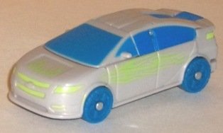
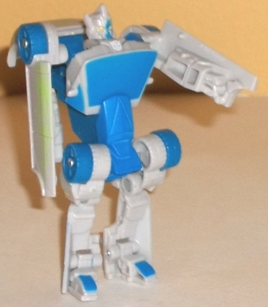
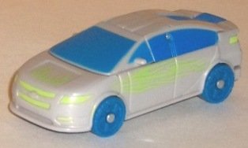
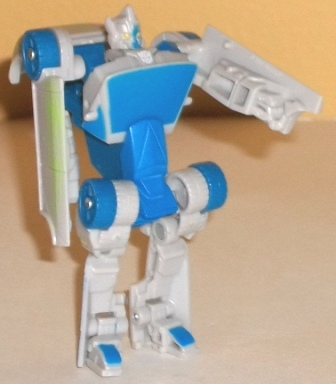
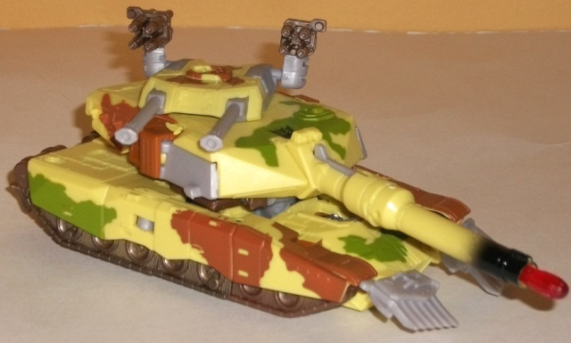
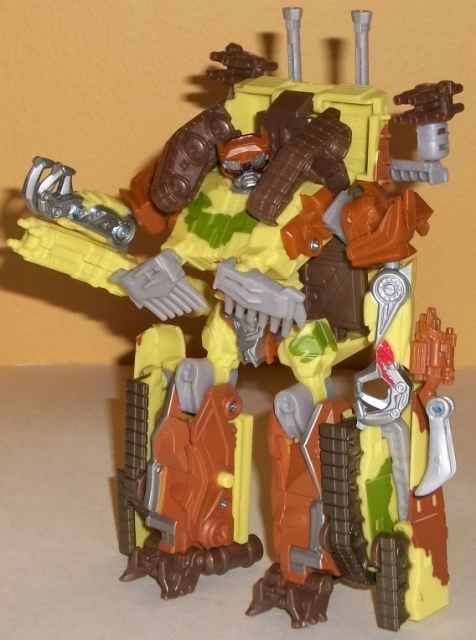

 
Allegiance : Autobot
Size : Legend
Difficulty of Transformation : Very Easy
Color Scheme : Light chalky gray, blue, and some yellow and light pale lime green
Individual Rating : 6.1
Set Price : $15 U.S.
(NOTE: Because this set is composed of repaints,
this is not a full-blown review. This mainly covers any changes made to
the set and the color scheme, and merely compares it to the original versions
of these molds. For a review on the original Movie deluxe Brawl mold, go
here
.
For a review on the original mass-release RotF Legends Jolt mold, go
here
.)
 Jolt
Jolt


Allegiance
: Autobot
Size
: Legend
Difficulty of Transformation
: Very
Easy
Color Scheme
: Light chalky gray,
blue, and some yellow and light pale lime green
Individual Rating
: 6.1
This redeco of Jolt more
or less swaps his original colors, with light gray now being the dominant
color while a moderate shade of blue makes up his windows, wheels, and
some of his robot parts. Although I think light gray is a really overused
color with Transformers, it's a rather solid, semi-chalky shade of gray,
as opposed to the kinda ugly milky shade we often get. The blue is a very
attractive shade, however, and the two contrast against each other quite
well. The blue piece near the back of the vehicle mode really sticks out
with this color scheme, however, making it far more obvious it's a "robot
part" than on the original release of this mold. The blue wheels don't
make much sense either, but this they clearly weren't going for realism
with this color scheme. You can tell by the VERY bright light green paint
used for the headlights, taillights, and as a nice "flame" deco on the
sides and front of the vehicle mode. It's a nice deco job, but unfortunately,
it's such a light shade it's VERY hard to even see it apart from the light
gray, it blends in with that color so well. Even under strong light, it's
a bit difficult! That was just... bad planning, honestly. Even just a few
shades darker and it would've looked nice. Garish in a kitschy way, but
nice.
No mold changes have
been made to Jolt.
 Decepticon
Brawl
Decepticon
Brawl


Allegiance
: Decepticon
Size
: Deluxe
Difficulty of Transformation
: Medium
Color Scheme
: Light pale yellow,
muddy brown, moderately light orangish brown, and some black, dull pea
green, silver, moderately light red, light milky gray, and transparent
cherry red
Individual Rating
: 8.5
This ALMOST seems like
a desert camo color scheme for Brawl what with the yellow, brown, and orangish
brown, but then there's those patches of pea green. Maybe a semi-arid area?
Eh, there's not much rationalizing it; this version of Brawl has a funky
color scheme that seems to belong right amongst the G2 fellas. He's often
nickmaned "Banana Brawl" for a reason-- the yellow, though not outright
loud, is a light enough shade where it's hard to say it can blend in amongst
anything. It's a nice pale color though, and the green, orangish brown,
and brown actually contrast with it surprisingly nicely. However, the green
itself is a rather ugly, almost "puke-ish" shade of the color, which is
why I tend to like the robot mode color layout more-- it has noticeably
less of it. The light milky gray coloration used for some of Brawl's smaller
plastic parts is just as dull here as it's ever been. It doesn't really
blend in with the yellow much, either, as they're both light colors-- though
again, it's not used much, so that's not as much as a negative as it could
have been. The silver and red paint apps used to accent the robot mode
really work nicely, particularly on the waist and head. Brawl is overall
admittedly a mish-mash of colors, but he's a nice mish-mash. Heck, part
of it is because Brawl just has so darn many paint apps on this redeco--
seriously, they're almost anywhere. There isn't a single significant area
on him that's lacking paint-- even the end of the tank barrel has black
"charred" paint on it, which is excellent.
No mold changes have
been made to Decepticon Brawl, though thankfully, he does have the considerably
more secure shoulder tabs that the
Deep Desert
Brawl
redeco also has.
The "Desert Ruins Brawl" set is definitely the one out of the two Wal-Mart Exclusive deluxe/legend vs. packs that I'd recommend the most. For one, the two molds aren't horribly out of scale with each other in this set (though Jolt is still a little small), but more importantly, BOTH of them have very unique color schemes that easily differentiate them from their mold's previous color schemes. They've also got quite a bit of paint, though Jolt's green flame paint apps are admittedly horribly used. However, they are both fairly loud color schemes, so I'd recommend this set the most to those who like loud/G2/kitschy color schemes. If you prefer more realistic colors on your TFs, however, then this set is a fairly easy pass.
Reviews by Beastbot